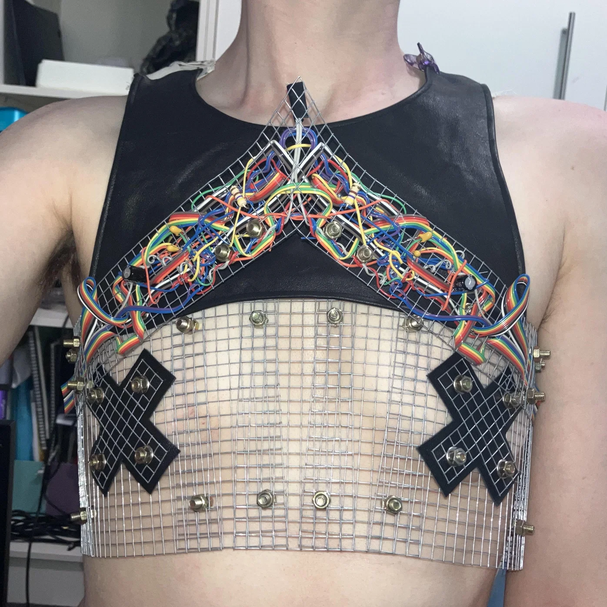
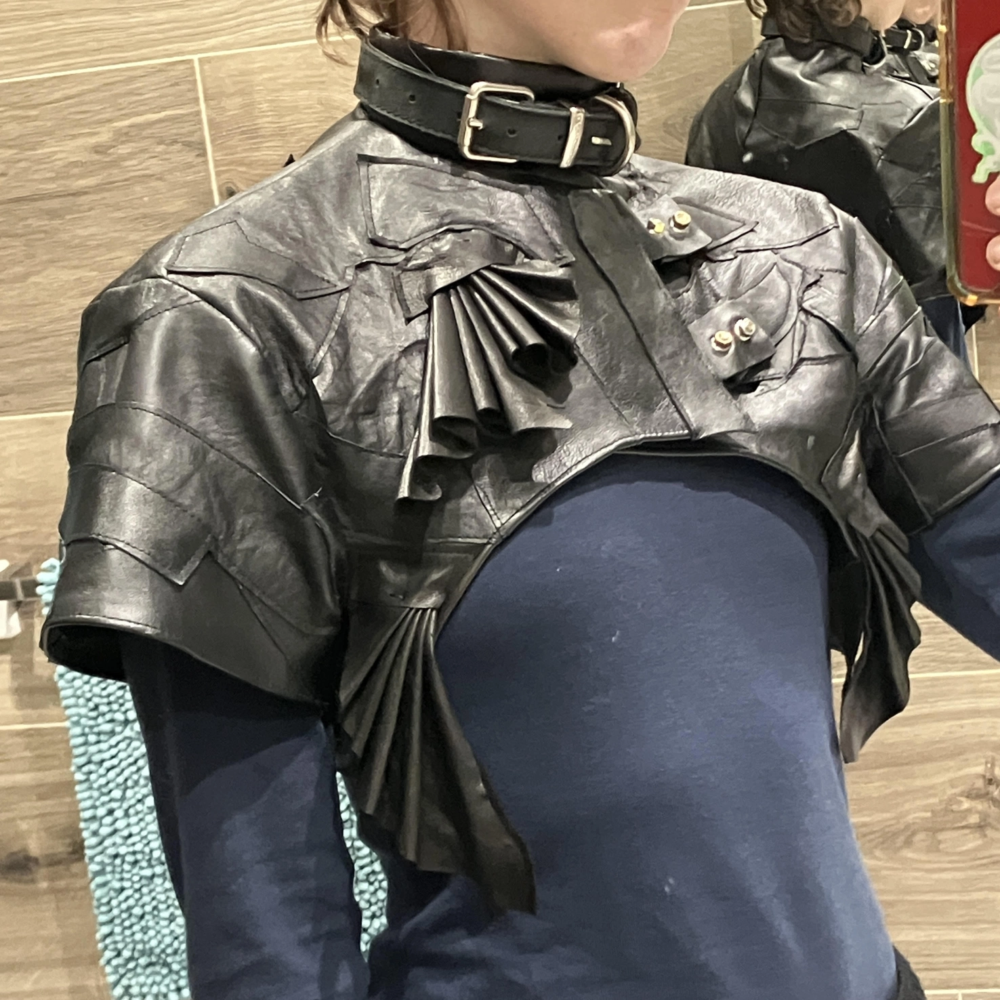
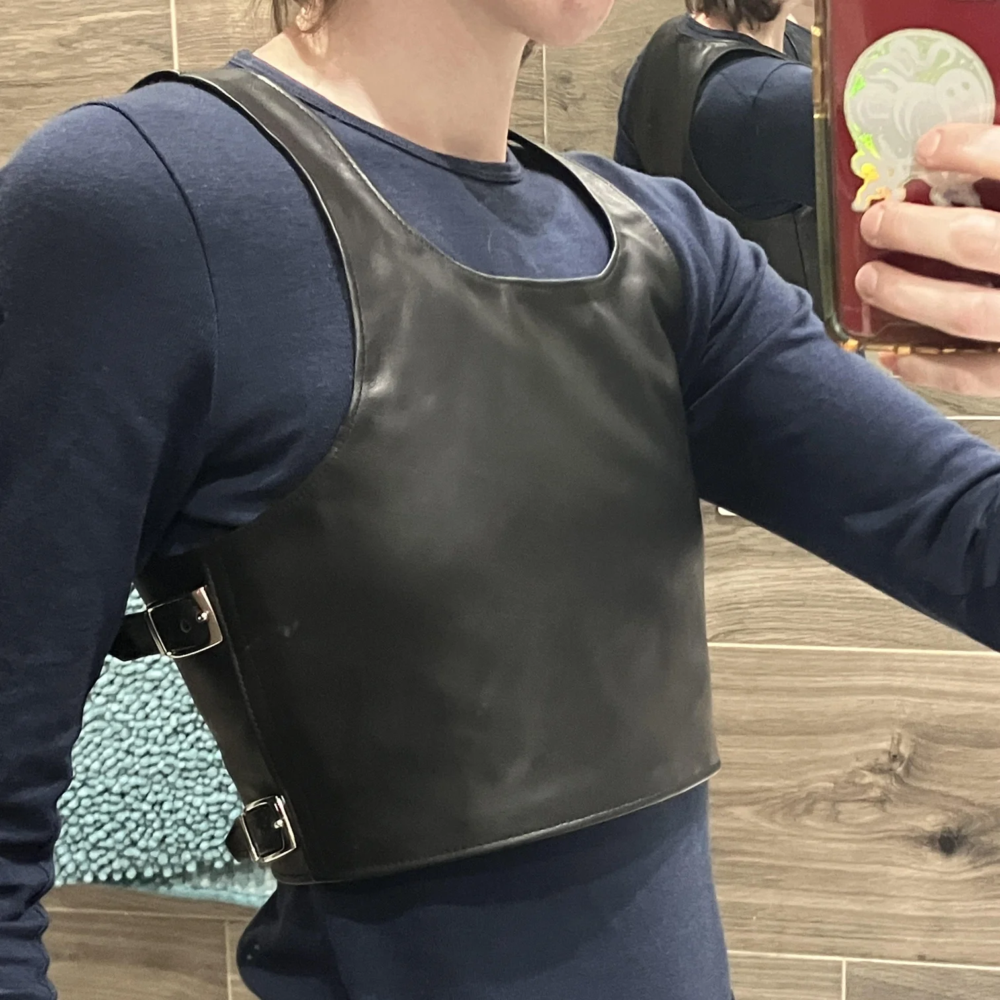
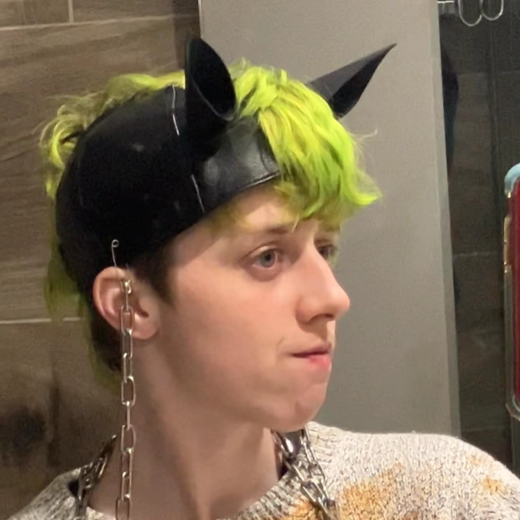
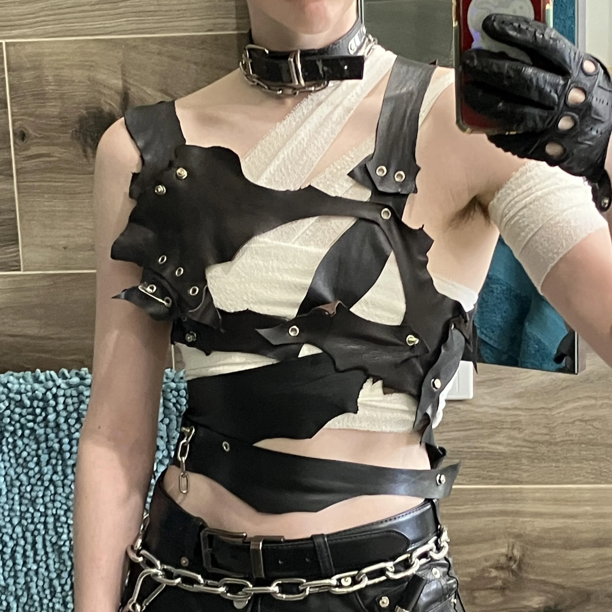
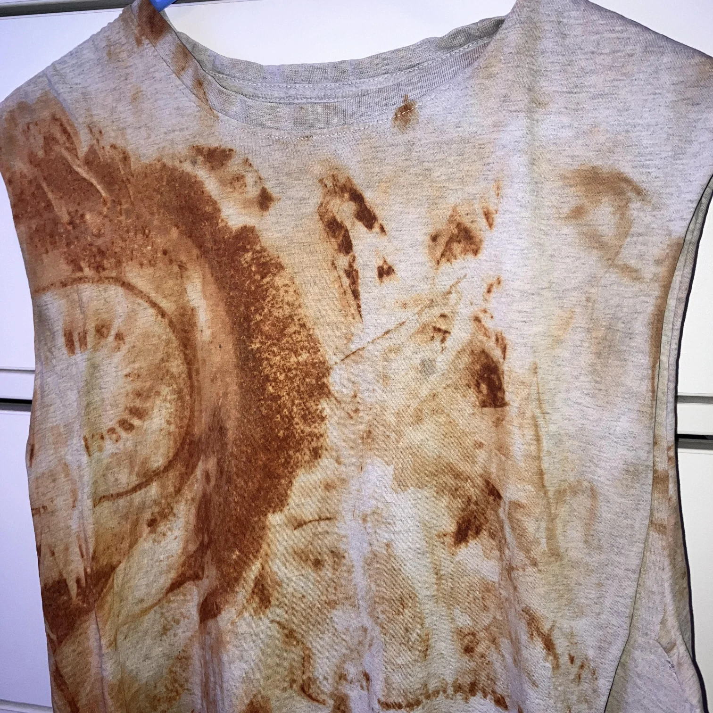
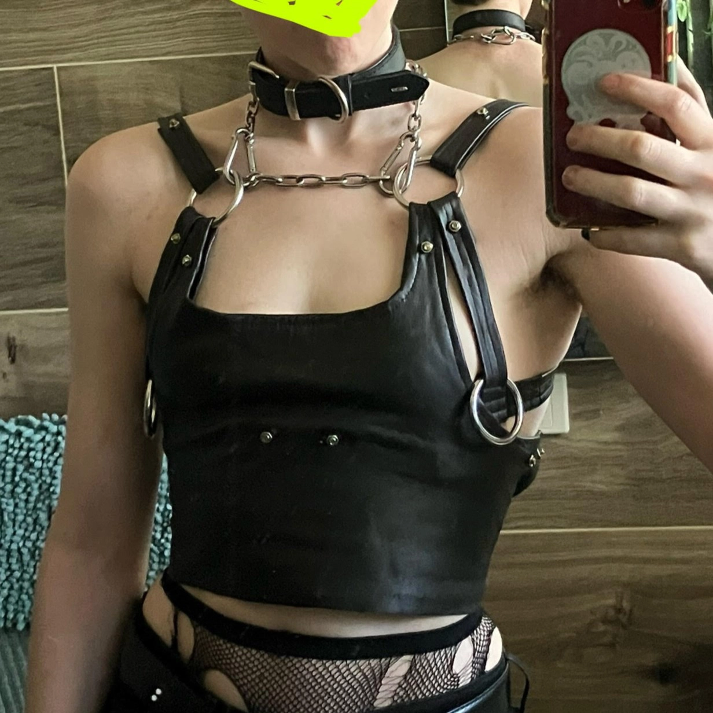
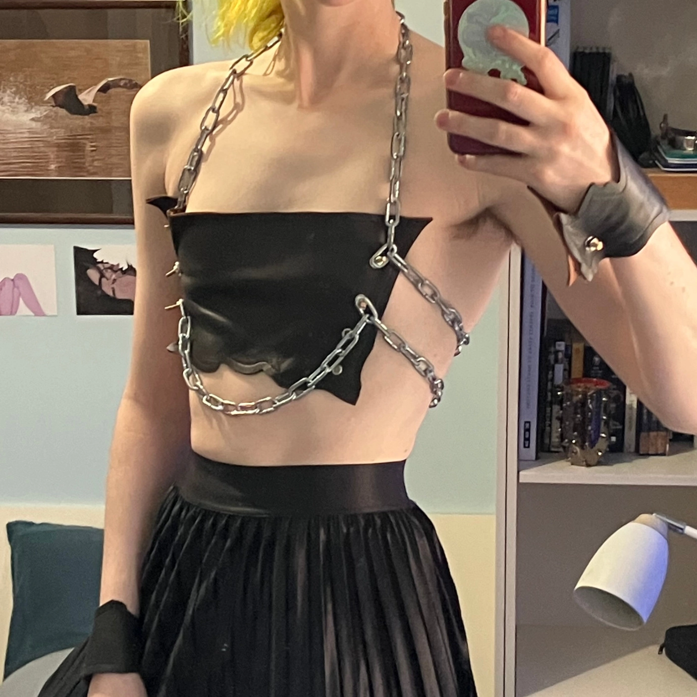
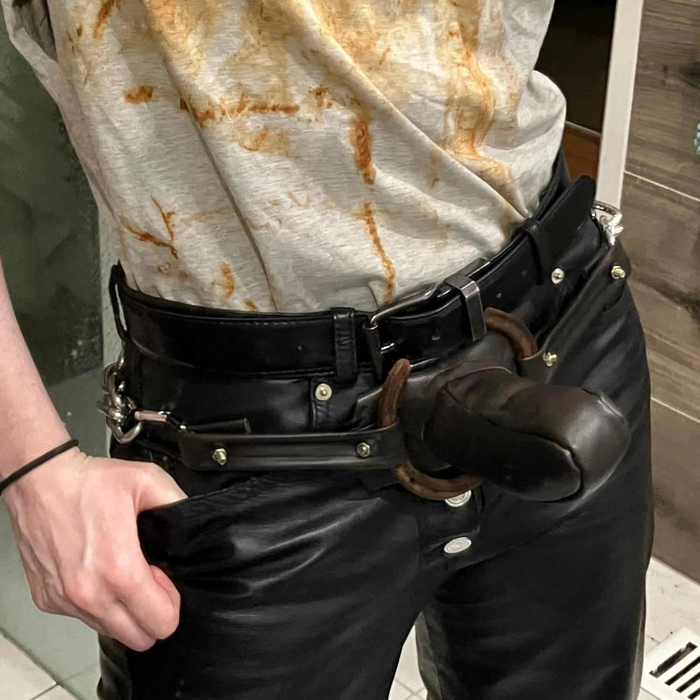
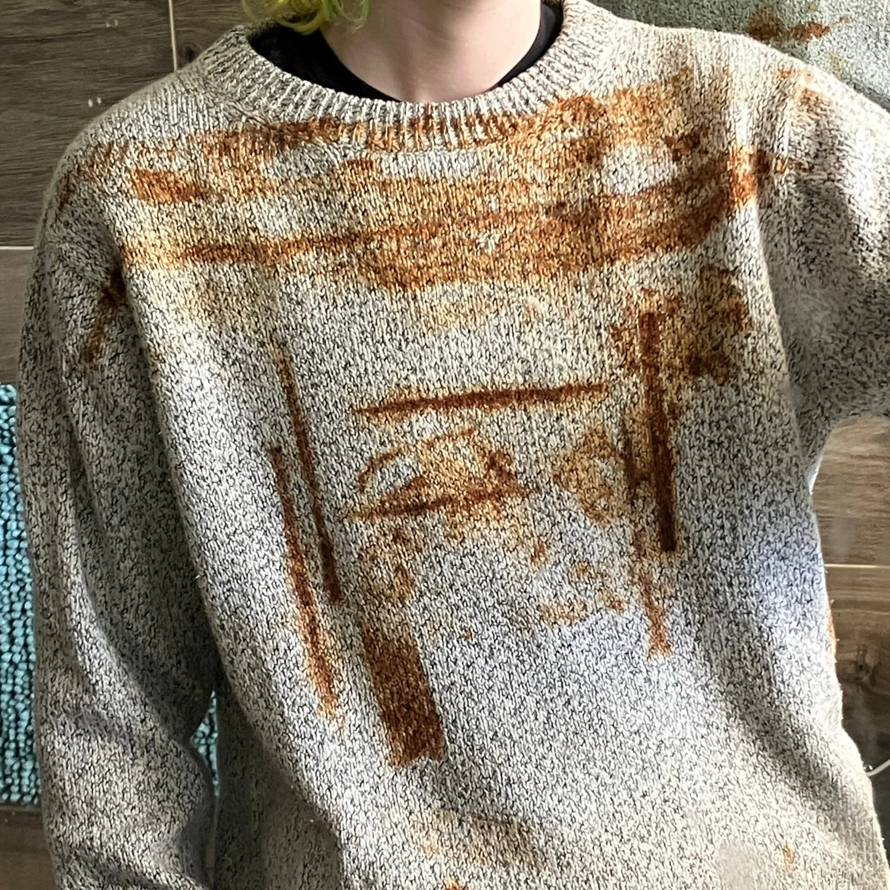

Here are some fun things I wear to nightclubs, movie screenings, goth festivals, castles, grocery stores...
Many of these are toiles, off-cuts, experiments, or direct harvests from more serious fashion projects. The rust dyeing began with Freight Train to Faerie, and has continued since then. Others are previews of projects still to come!
Working with irregular leather hides leaves you with a lot of useful scraps. I first made a piecemeal scrap top inspired by Jenny Bannister, then continued using leather scraps more significantly in The Gargoyle. Most recently I created the high-collared Tousle jacket below, to wear to Castle Party in Poland (now a favourite for many occasions).
Both my personal style and designer's eye are moving away from the silhouettes on this page, which rely too greatly on a narrow waistline, so one of my big goals for the near future is to rebuild my own leather warddrobe :).









